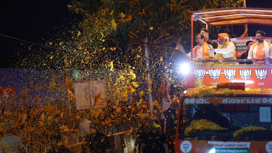

News Website
PM Modi invokes ‘The Kerala Story’, says ‘anti-India’ plot exposed in film

Prime Minister Narendra Modi, who is campaigning in Karnataka’s Bellary has mentioned the Hindi film ‘The Kerala Story’ in his speech and alleged that the Congress is trying to oppose the film.
Tollywood actor Brahmanandam to campaign for BJP in Karnataka

After a series of Kannada actors, the BJP has roped in Tollywood actor and comedian Brahmanandam to campaign for the party in Karnataka. The Telugu actor will campaign for the health minister Sudhakar in his Chikkaballpur constituency on Friday, where there is a significant number of Telugu speakers.
Karnataka elections: Cong releases 'corruption rate card', accuses BJP of looting over ₹15000 crore
Ahead of assembly elections, Karnataka Congress party on Friday released a 'corruption rate card' depicting various 'scandals' of ruling BJP government in the state, including '40 per cent commission' charge by state contractors.
Karnataka Poll: CM Bommai junks pre-polls surveys giving Cong an edge, exudes confidence in BJP

Whereas, the 14 defectors who helped the BJP topple the Congress-JD(S) government in 2019 will win from their respective segments. Bommai also alleged the Congress has taken the election discourse to a "very low level".
PM Narendra Modi's Bengaluru road show gets rescheduled again. Details

Karnataka to not cause any inconvenience to the students who will be taking the NEET exam. Tejasvi tweeted, “On account of NEET exams on 7th of May, Hon. PM Sri @narendramodi Ji directed us to prepone the 26 km road show to the 6th of May and shorten the
Karnataka Poll 2023 LIVE Updates: PM Narendra Modi holds a road show in Tumakuru

rallies and roadshows, with prominent leaders including Prime Minister Narendra Modi and Congress leader Priyanka Gandhi touring the state.Karnataka is also reeling with a controversy over the recently-released Congress manifesto, which vowed to ban groups such
Prince William vs Meghan Markle: ‘Harry leapt to defend his wife’

tigation was launched where past and present palace employees talked about their experiences o
Harry won't be 'hidden behind a pillar', seat in coronation will send a message. Experts speculate amid royal tensions

Westminster Abbey, especially given his strained relationship with some members of the royal family. However, according to royal expert Katie Nicholl, the Duke of Sussex won't be "hidden behind a pillar" and will be given a prime seat at the event
Delhi high court orders Google to remove YouTube videos linking Indian spices to cow dung, urine

A perusal of the comments to said YouTube videos show that members of the public are being influenced and led into believing such false statements, causing grave prejudice to Plaintiff (Dharampal Satyapal Sons Pvt Ltd). Considering the easy and unrestricted
PM Modi to attend France's Bastille Day Parade as guest of honour on July 14

Paris as the guest of honour on July 14, the Ministry of External Affairs announced on Frida
TNDTE typing test results announced at dte.tn.gov.in, direct link

The Tamil Nadu Directorate of Technical Education has announced the TNDTE 2023 accountancy and typing test results today May 5. Candidates can check the results on the official websites at dte.tn.gov.in
ICG Assistant Commandant result declared at joinindiancoastguard.cdac.in, get link

ancies are for General Duty (GD), 10 vacancies are for CPL (SSA), 6 vacancies are for Tech (Engg), 14 va
UPSC CDS 1 result 2023 out, know how to check

Union Public Service Commission (UPSC) has announced written results of the Combined Defence Servi
AIIMS INISS Result 2023 expected to be out on May 5 at aiimsexams.ac.in

2023 on May 5, 2023. Candidates who have appeared for Institute of National Importance Super Speciality exam can check the results on the official site of AIIMS at aiimsexam
UPPSC Lekhpal Result 2023 released at upsssc.gov.in, get link here

tion. The cutoff for the unreserved category is 75.755, for the SC category, the cutoff is 73.75%. For the ST category, the cut-off is
Odisha NMMS result 2023 declared at ntse.scertodisha.nic.in, get link

he State Council of Educational Research and Training (SCERT) Odisha has announced the provisional National Means cum Merit Scholarship (NMMS) Odisha result 2023. candidates who
Haryana D.El.Ed March Result 2023 declared at bseh.org.in, link here

Board of School Education, Haryana has declared Haryana D.El.Ed March Result 2023. Candidates who have appeared for D.El.Ed Special Chance/Re-Appear Exam March-2023
GSEB GUJCET results 2023 declared on gseb.org

Gujarat Secondary and Higher Secondary Education (GSHSEB) has declared Gujarat Common Entrance Test or G
Dental hygiene for kids: Tips for protecting your child's teeth from harmful bacteria

mmon dental problems in children is tooth decay, which is caused by harmful bacteria. The mouth as we all know is a haven of bacteria both good and bad, the key to good oral health is keeping the balance between them tipped towards the good bacteria. We cannot make our mouth bacteria-free since the oral microbiome is very important to maintain both oral and gut health, but we do have a responsibility t
Alia Bhatt says Priyanka Chopra told her to find her at Met Gala: 'You'd have to take me to the bathroom'

Priyanka Chopra before Met Gala 2023. While it was Alia's first Met Gala, Priyanka has already made a splash at the event many times. Alia in a behind-the-scenes video from New York, shared s